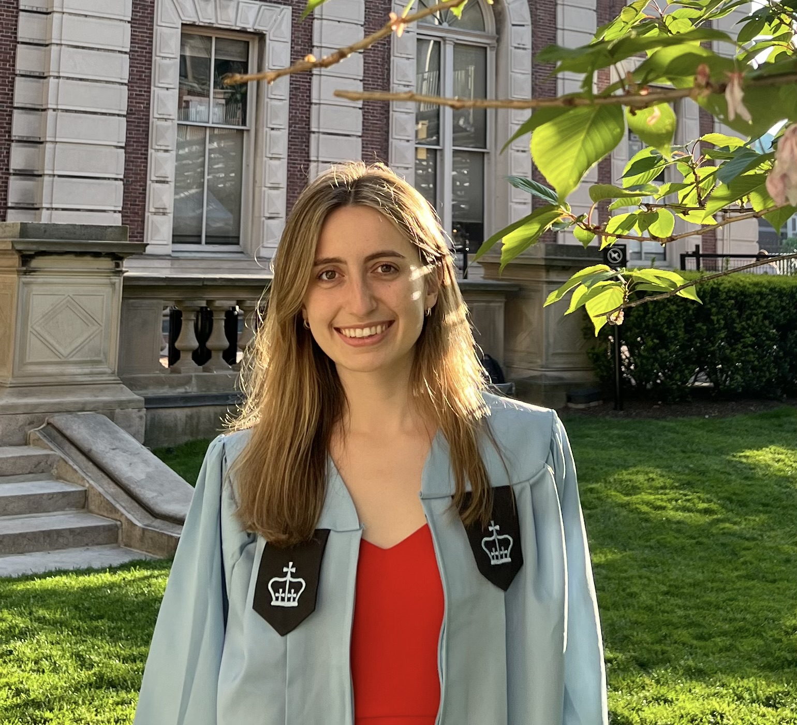

Elena Gribelyuk
Hi! I'm a PhD student in theoretical computer science at Princeton University. In 2022, I graduated from Columbia University, where I double-majored in mathematics and computer science.
Research Interests
I'm primarily interested in randomized algorithms, particularly streaming/sketching algorithms, graph algorithms, communication complexity. Most recently, I've been thinking about adversarial robustness in the streaming model.
Previous Research Projects
-
-
- Advisor: Mikhail Khovanov
- Advisor: Joshua Pfeffer
-
-
Teaching
During the summers of 2020-2022, I was a mathematics instructor at the King Summer Institute, where I taught the six-week accelerated Pre-Calculus course to 10-15 students. My responsibilities included teaching for 3 hours/weekday, writing all course materials, holding instructor office hours, and meeting with students individually to check in and offer additional help when needed.
Also, I have been a teaching assistant for the following courses at Columbia University. My responsibilities included grading homework and exams, holding office hours and recitations, writing practice problems, and editing lecture notes.
- COMS 4995 Advanced Algorithms, taught by Professor Alexandr Andoni in Spring 2022
- CSOR W4231 Analysis of Algorithms, taught by Professor Alexandr Andoni in Fall 2021
- MATH UN2030 Ordinary Differential Equations, taught by Professor Evgeni Dimitrov in Fall 2021
- CSOR W4231 Analysis of Algorithms, taught by Professor Xi Chen in Summer 2021
- COMS W3261 Computer Science Theory, taught by Timothy Randolph in Summer 2021
- MATH GU4042 Modern Algebra II, taught by Professor Inbar Klang in Spring 2021
- COMS W3203 Discrete Math: Combinatorics and Graph Theory, taught by Professor Ansaf Salleb-Aouissi in Fall 2020 and Spring 2021
I also lectured and served as a TA for the Columbia Undergraduate Math Society's Introduction to Proofs workshop in
Fall 2020 and Fall 2021.
This is a 4-week workshop for undergraduate students that teaches how to
write and construct proofs.
Talks and Seminars
Other
Outside of TCS/math, I love classical music and playing the piano (my favorite composer is Rachmaninoff :)). I'm also passionate about math education, and I am a part-time mathematics instructor at Art of Problem Solving (Princeton location) in my free time.